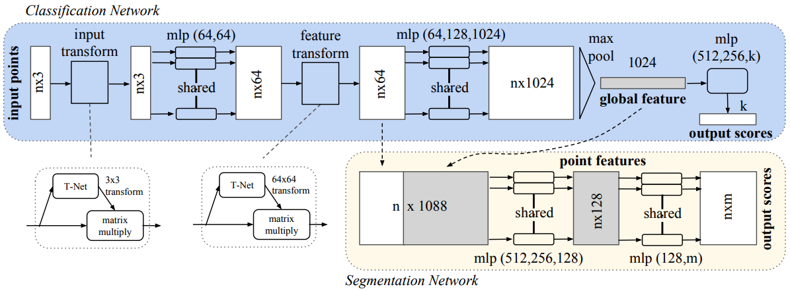
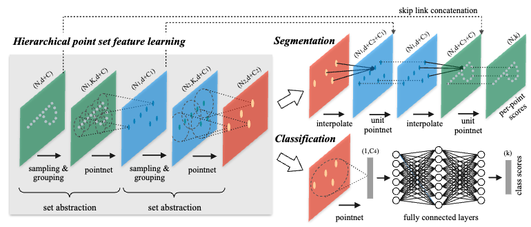
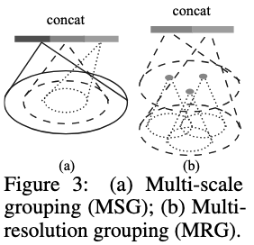
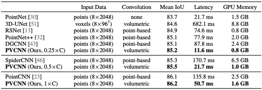
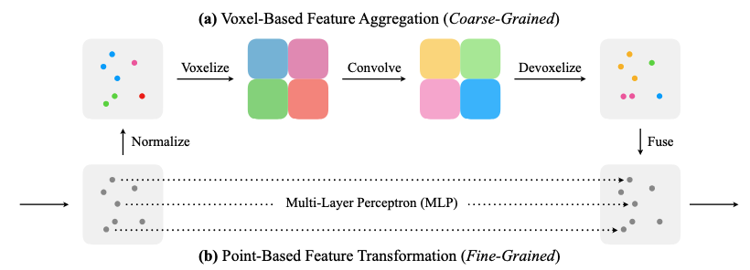

PVCNN, PointNet, PointNet++, 3D-UNet
3D data, unlike 2D image, is usually more complicated and requires more computational resource(for similar tasks). More importantly, there are multiple different representation methods for 3D shapes and most popular ones inlcude multi-view, volumetric, point cloud, mesh and etc. Different 3D asset generation method gives different data form: multi-view data is generated from multi-camera data, point cloud is typically captured by LiDAR sensors, mesh data is typically building block for software such as Blender, Autodesk and etc.
A point cloud is represented as a set of 3D points \(\{p_i\mid i=1, \cdots, n\}\), where each point \(p_i\) is a vector of its \((x,y,z)\) coordinate plus extra feature channels such as color, normal etc. Point cloud data has three main properties:
PointNet model, proposed in
The paper introduced specific structure(induced bias) to deal with the challenges mentioned previously. The overall model structure is presented in figure 1.

Symmetry function for unordered input:
A symmetric function is a simple solution for unordered point cloud. By symmetric, we mean that \(f(x_1, x_2, \cdots, x_n)=f(x_{i_1}, \cdots, x_{i_n})\) where \(\{i_1, \cdots, i_n\}\) is a random permutation of \(\{1, 2, \cdots, n\}\). In the context of this paper, the symmetric function applied to the point cloud takes the following form
\[\begin{equation} f(\{x_1, \cdots, x_n\})=g(h(x_1),\cdots, h(x_n)), \end{equation}\]where \(f:2^{\mathbb{R}^N}\rightarrow\mathbb{R},~h:\mathbb{R}^N\rightarrow\mathbb{R}^K\) and \(g:\mathbb{R}^K\times\cdots\times\mathbb{R}^K\).
Local and global information aggregation:
Local and global information both contained important signals about point cloud. However, different tasks can have different dependency on these signals:
Joint alignment network:
Ideally, prediction over a point cloud should be invariant with regard to the orientation of the point cloud. To be more specific, the prediction result(i.e. label for classification task) should be the same if we rotate or translate the point cloud. This requires some spatial transform in the model. The paper introduced mini-network(called T-net) to predict an affine transformation matrix and directly apply this transformation to the coordinates of input points. To contrain the predicted matrix is a spatial transformation matrix, an additional regularization term is added:
\[L_\mathrm{reg}=\|I-AA^T\|_F^2\]Two interesting theoretical properties is proved in the paper:
Universal approximation: The paper showed that the composition of a continuous function \(h\) and a symmetric function \(g\) still enjoy the universal approximation property(i.e. it can approximate any contiuous function w.r.t. Hausdorff distance).
Bottleneck dimension and stability: The paper showed that there exist a critical subset of each point cloud, of which the number of points is less than the dimension of the max pooling layer K, and noise added to points outside of this critical subset is not likely to change the final prediction. This property suggest that the PointNet model is likely to learn to summarize a shape by a sparse set of key points.
An obvious drawback of PointNet is that the local structual information is not captured by the model. Certainly, the pointwise embedding in the intermediate layer embedded some local information. But the important structural signals(such as local curvature, normal vector and etc) is not captured. PointNet++, proposed in
The PointNet++ model introduced hierechical feature learning process to extract both local and global information. It incorporated different down-sampling mechanism to deal with non-uniform point distribution on the shape. The paper also discussed, for segmentation task, how to propagate global information(signal in higher abstract level) to pointwise embedding.

Hierarchical Point Set Feature Learning:
There are three components of the hierarchical point set feature learning process:
Robust Feature Learning under Non-Uniform Sampling Dnesity
The sampling layer has picked a subset of points from the point cloud as centroids and each of them has their own receptive fields(with intersection). The grouping layer need to resolve the problem of how to aggregate information/features in a receptive field. The paper proposed two grouping strategies:

Point Feature Propagation for Set Segmentation
For the segmentation task, the model needs to propagate features from subsampled points to the original points. The feature propagation is achieved by interpolating feature values \(f\) of \(N_l\) points at coordinates of \(N_{l-1}\) points. Each channel(or dimension) in the feature is computed as follows, \(\begin{equation} f^{(j)}(x)=\frac{\sum_{i=1}^k w_i(x) f_i^{(j)}}{\sum_{i=1}^k w_i(x)} \quad \text { where } \quad w_i(x)=\frac{1}{d\left(x, x_i\right)^p}, j=1, \ldots, C. \end{equation}\)
Previous methods are focused on discussing extraction of features from point cloud. The PVCNN model, proposed in

Why efficiency is a problem?: The paper summarized the common reasons that cause model slow and take lots of memory for 3D features.
High resolution requires high memory cost for voxel-based method. The low resolution can lead to information loss and points in the same voxel grid are not distinguishable. The paper estimated that a single GPU(with 12GB memory) can only afford voxel of 64 in each dimension and lead to 42% of information loss.
Irregular memory access and dynamic kernel overhead for point-based models. Models like PointNet++ utilizes neighborhood information in the point domain which lead to the irregular memory access pattern and becomes the fficiency bottlenecks. Furthemore, the computation of kernel \(\mathcal{K}(x_o, x_j)\) is more costful, since, unlike 3D volumetric convolutions where neighborhood index is readily accessible, the model need to find neighbors on the fly.
The PVCNN architecture introduced in this paper combined advantages of both point-based and voxel-based methods by disentangles the fine-grained feature transformation and the coarse-grained neighbor aggregation.
The voxel-based feature aggregation process is demonstrated in the upper half of Fig 5. It consist following sub-routines:

This is represented in the bottom half of the Fig. 5. The process is very straight forward and is directly apply MLP to point-wise features.
In this step, the model fuse both individual point features and aggregated neighborhood information with addition.